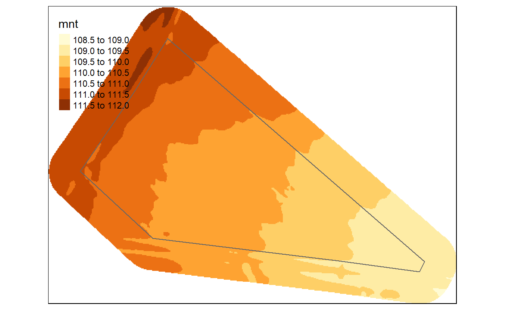

Dans cet exercice, nous allons mettre en oeuvre les techniques de sélection des unités d’échantillonnage dans l’espace afin de produire à la fois une carte des propriétés du sol et une estimation des statistiques globales de la parcelle.
Nous basons ce TD sur les données acquises par l’université de Tours sur une parcelle agricole. L’objectif est de caractériser les propriétés du sol globalement et localement.
Nous allons aborder
sffields avec la fonction stratifykmeansIl est en lien avec les cours Cours Echantillonnage, un libre cookbook.
La définition de protocole d’échantillonnage dans l’espace nécessite d’utiliser les fonctions SIG dans R.
Ce tutoriel se concentre sur les package raster et sf.
Pour faire les figures, j’aime bien le package tmap qui permet de faire des cartes très avancées.
J’ai préchargé les librairies et préparer les données.
library(learnr)
library(rgdal)
library(sf)
library(raster)
library(tmap)
library(dplyr)
library(fields)
library(sampling)sf::st_read() permet de lire un fichier shape alors que la fonction raster::raster est dédie au fichier raster. Pour charger en mémoire la grille, nous utilisons la fonction `raster::readAll()``
La grille qui représente l’altitude est au format Arc/Info. Il faut donc indiquer le répertoire : * Lire les données * Extraire la partie correspondant à la parcelle (crop puis mask) * sauver les données pour la suite dans le repertoire data au format rds.
parc <- read_sf("www/parcelle_adj.shp")
r <- raster("www/mnt.tif" , values = TRUE)
rcrop <- crop(r,parc)
rcrop <- mask(rcrop,parc)
dir.create("data", showWarnings = FALSE)
saveRDS(parc, file = 'data/parc.RDS')
saveRDS(rcrop, file = 'data/r.RDS')On peut ensuite aisément visualiser les données avec le package tmap. On ajoute les couches avec les fonctions adaptées au format de données
tm_shape(r) + tm_raster() +
tm_shape(parc) + tm_polygons(alpha = 0)
Le setup permet de partager les données dans les différents exercices. Calculer les variables dérivées,
Retenez bien les noms des objets créés :
l’objet magrille contenant les coordonnées et les variables dérivées
summary(maGrille)## x y alt tri tpi
## Min. :529649 Min. :6673362 Min. :109.2 Min. :0.0003138 Min. :-6.865e-03
## 1st Qu.:529703 1st Qu.:6673395 1st Qu.:110.0 1st Qu.:0.0037603 1st Qu.:-5.322e-04
## Median :529734 Median :6673419 Median :110.3 Median :0.0053215 Median : 5.341e-05
## Mean :529740 Mean :6673421 Mean :110.3 Mean :0.0057068 Mean : 5.330e-05
## 3rd Qu.:529774 3rd Qu.:6673444 3rd Qu.:110.6 3rd Qu.:0.0072403 3rd Qu.: 6.361e-04
## Max. :529863 Max. :6673507 Max. :111.2 Max. :0.0276222 Max. : 5.915e-03
## slope aspect
## Min. :1.206e-05 Min. :0.000
## 1st Qu.:9.594e-03 1st Qu.:1.502
## Median :1.368e-02 Median :2.225
## Mean :1.467e-02 Mean :2.254
## 3rd Qu.:1.871e-02 3rd Qu.:2.892
## Max. :7.279e-02 Max. :6.283l’objet parc contenant les coordonnées et les variables dérivées
summary(parc)## Id geometry
## Min. :0 POLYGON :1
## 1st Qu.:0 epsg:2154 :0
## Median :0 +proj=lcc ...:0
## Mean :0
## 3rd Qu.:0
## Max. :0Dans un premier temps, écrire un code pour produire un échantillonnage aléatoire simple appelé SI. Pour cela:
st_sample avec les bonnes optionstmapset.seed()
nEchantillons <-
# échantillonnage aléatoire simple
MonSpSI <- st_sample( ,
size= ,
type = )
tm_shape() + tm_polygons() +
tm_shape() + tm_dots(size=)set.seed(12)
nEchantillons <- 24
# échantillonnage aléatoire simple
MonSpSI <- st_sample(parc ,
size= nEchantillons,
type = 'random'
)
# Faire la carte
tm_shape(parc) + tm_polygons() +
tm_shape(MonSpSI) + tm_dots(size=2)Créer un échantillonnage régulier avec 24 points
st_sample avec la bonne optiontmapnEchantillons <- 24
# échantillonnage grille
MonSpSY <- st_sample( ,
size= ,
type = )
tm_shape(parc) + tm_polygons() +
tm_shape() + tm_dots(size=)nEchantillons <- 24
# échantillonnage grille
MonSpSY <- st_sample(parc ,
size= nEchantillons,
type = 'regular')
tm_shape(parc) + tm_polygons() +
tm_shape(MonSpSY) + tm_dots(size=2)Créer un échantillonnage par strate compacte
kmeans sur les coordonnées avec autant de strates que de sitestmapk1<- kmeans(x= ,
centers= ,
nstart=10, iter.max = 500)
maGrille$stratKM <- factor(k1$cluster)
rdist.out <- rdist(x1 = k1$centers,
x2 = maGrille[,1:2]
)
ids.mindist <- apply(rdist.out,MARGIN=1,which.min)
mySampleKM <- maGrille[ids.mindist,]
rm(k1)
mySampleKM <- st_as_sf(mySampleKM,
coords = c('x','y'),
crs = crs(parc),
agr = "constant")
tm_shape(r) + tm_raster() +
tm_shape(parc) + tm_polygons(alpha = 0) +
tm_shape(MonSpSY) + tm_dots(size=4) +
tm_shape(MonSpSI) + tm_dots(size=2, col="red")+
tm_shape(mySampleKM) + tm_dots(size=2, col="green")k1<- kmeans(x= maGrille[,1:2] ,
centers= nEchantillons,
nstart=10, iter.max = 500)
strat0<- k1$cluster
maGrille$stratKM <- factor(strat0)
rdist.out <- rdist(x1 = k1$centers,
x2 = maGrille[,1:2]
)
ids.mindist <- apply(rdist.out,MARGIN=1,which.min)
mySampleKM <- maGrille[ids.mindist,]
rm(k1)
mySampleKM <- st_as_sf(mySampleKM,
coords = c('x','y'),
crs = crs(parc),
agr = "constant")
tm_shape(r) + tm_raster() +
tm_shape(parc) + tm_polygons(alpha = 0) +
tm_shape(MonSpSY) + tm_dots(size=4) +
tm_shape(MonSpSI) + tm_dots(size=2, col="red")+
tm_shape(mySampleKM) + tm_dots(size=2, col="green")Nous pouvons commencer par calculer la pente à partir du mnt
s <- terrain( rcrop ,
opt = c("slope")
)
plot(s)Allonger la liste des variables dérivées calculées dans l’objet s afin de rajouter l’aspect, le TPI et le TRI: c( "slope","aspect", "TPI", "TRI")
astuce: remplacer l’option opt en c( "slope","aspect", "TPI", "TRI").
s <- terrain( r,
opt = c("slope", "aspect", "TPI", "TRI")
)nStrates <- 8
k1<- kmeans(x= ,
centers= ,
nstart=10,
iter.max = 500)
strat0<- k1$cluster
maGrille$stratKM <- factor(strat0)
StrateSTSI <- rasterFromXYZ(maGrille[,c("x","y","stratKM2")],
crs = crs(parc))
tm_shape(StrateSTSI) + tm_raster() nStrates <- 8
k1<- kmeans(x= maGrille[,1:2] ,
centers= nEchantillons,
nstart=10, iter.max = 500)
strat0<- k1$cluster
maGrille$stratKM <- factor(strat0)
StrateSTSI <- rasterFromXYZ(maGrille[,c("x","y","stratKM2")],
crs = crs(parc))
tm_shape(StrateSTSI) + tm_raster() k1<- kmeans(
)
maGrille$stratKM <- factor(k1$cluster)
rdist.out <- rdist(x1 = k1$centers,
x2 = maGrille[,1:2]
)
ids.mindist <- apply(rdist.out,MARGIN=1,which.min)
mySampleKM <- maGrille[ids.mindist,]
mySampleKM <- st_as_sf(mySampleKM,
coords = c('x','y'),
crs = crs(parc),
agr = "constant")
tm_shape(r) + tm_raster() +
tm_shape(parc) + tm_polygons(alpha = 0) +
tm_shape(MonSpSY) + tm_dots(size=4) +
tm_shape(MonSpSI) + tm_dots(size=2, col="red")+
tm_shape(mySampleKM) + tm_dots(size=2, col="green")k1<- kmeans(x= maGrille[,1:2] ,
centers= nEchantillons,
nstart=10, iter.max = 500)
strat0<- k1$cluster
maGrille$stratKM <- factor(strat0)
rdist.out <- rdist(x1 = k1$centers,
x2 = maGrille[,1:2]
)
ids.mindist <- apply(rdist.out,MARGIN=1,which.min)
mySampleKM <- maGrille[ids.mindist,]
mySampleKM <- st_as_sf(mySampleKM,
coords = c('x','y'),
crs = crs(parc),
agr = "constant")
tm_shape(r) + tm_raster() +
tm_shape(parc) + tm_polygons(alpha = 0) +
tm_shape(MonSpSY) + tm_dots(size=4) +
tm_shape(MonSpSI) + tm_dots(size=2, col="red")+
tm_shape(mySampleKM) + tm_dots(size=2, col="green")Créer un échantillonnage régulier avec 24 points
nEchantillons <- 24
# échantillonnage grille
MonSpSY <- st_sample(parc ,
size= nEchantillons,
type = 'regular')
tm_shape(parc) + tm_polygons() +
tm_shape(MonSpSY) + tm_dots(size=2)Hint: La stratégie consiste à:
st_sample avec la bonne optiontmap